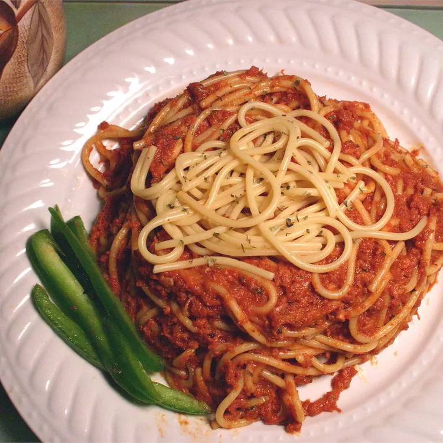

Spaghetti With Corned Beef

Description
Tasty homestyle Spaghetti recipe that's just as simple as it is delicious.
Ingredients
- 8 ounces spaghetti
- 1 (12 ounce) can corned beef
- 1 cup spaghetti sauce
- 1 cube chicken bouillon
- 1 teaspoon italian seasoning
- 1/2 teaspoon garlic power (optional)
- 1/2 tablespoon dried minced onion (optional)
Steps
- Dissolve bouillon in boiling water. Cut spaghetti noodles in half and add to boiling water until done.
- Over medium heat empty can of corned beef onto a skillet. Add spaghetti sauce to meat. Stir until heated; corned beef will come apart and a thick sauce will form. If desired, add Italian seasoning, garlic powder, dry onion, or any other spices.
- Once noodles are done, drain and combine with corned beef sauce.